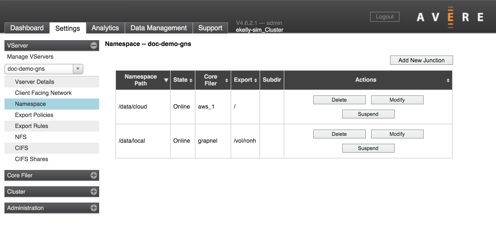
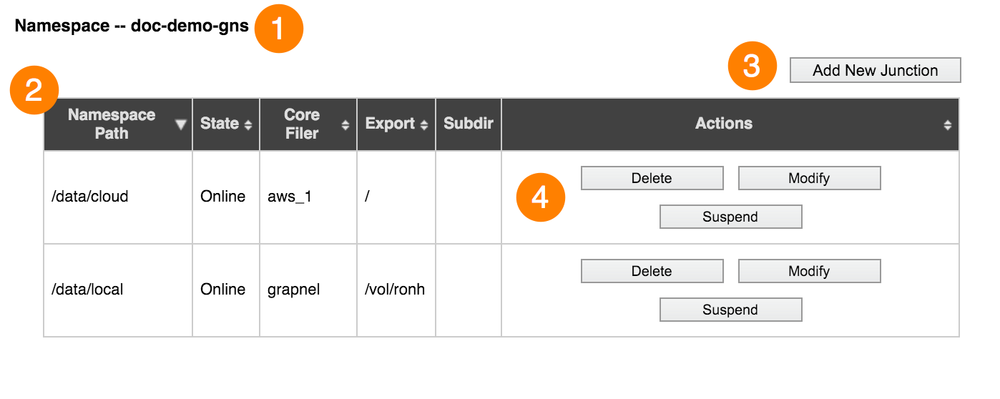
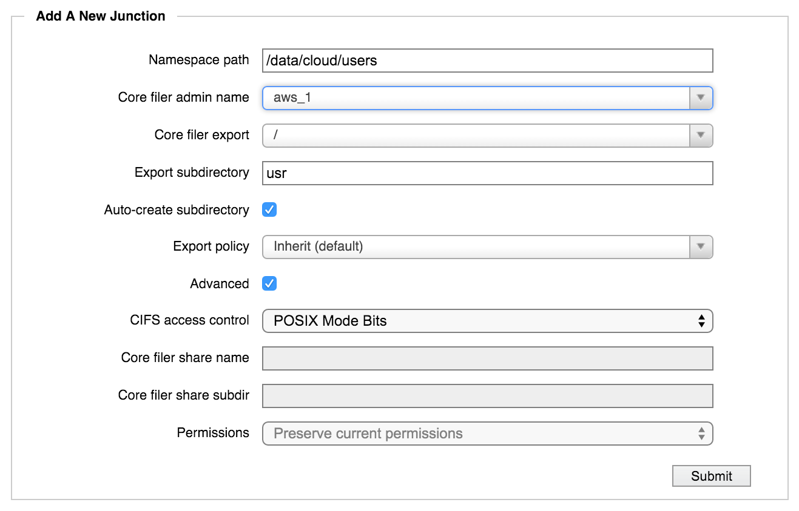
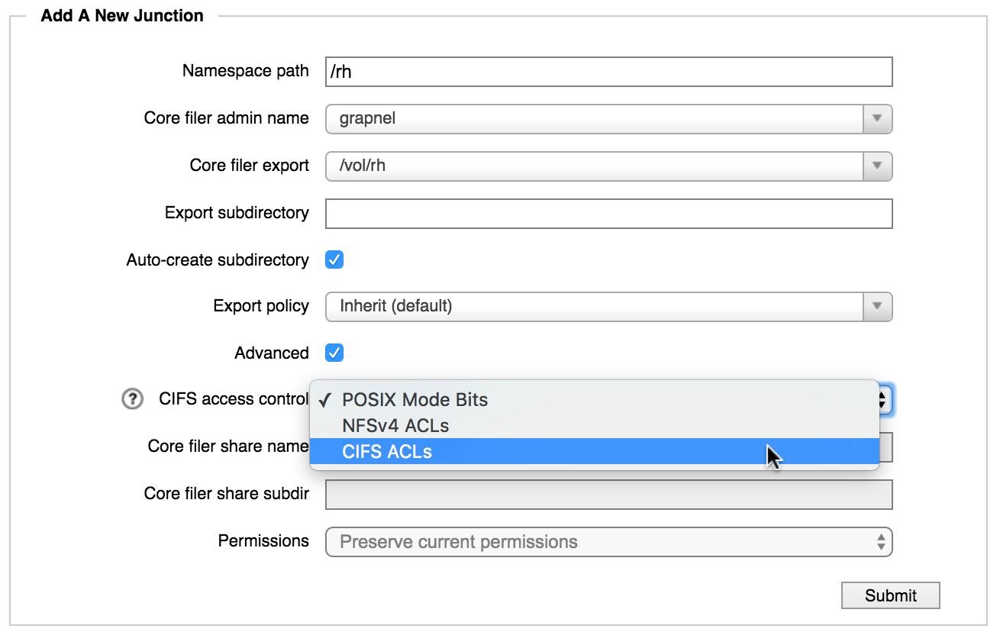

VServer > Namespace
The Namespace settings page is used to configure junctions, which map the client-visible namespace to the back-end storage filesystem.
{kind=link}
Junctions are part of creating a global namespace (GNS), sometimes called a pseudo-filesystem. Read Using a Global Namespace for information about designing your GNS and setting up the infrastructure necessary to support namespace mapping.
If your cluster has more than one vserver, use the selector in the sidebar to choose which vserver to show.
The table lists existing junctions for this vserver (1).
{kind=link}
You can sort the table by any column heading (2).
From this page, you can:
- Create a new junction (3)
- Delete or suspend an existing junction (4)
- Modify an existing junction (4)
Using Junctions with Cloud Storage
Because cloud storage is structured differently from NAS storage, creating junctions for cloud core filers is somewhat different from creating junctions for conventional NFS network-attached storage systems.
Differences between NAS and Cloud Storage Exports
Network-attached hardware storage and cloud storage are fundamentally different. NAS storage uses a hierarchical filesystem structure to store data in directories and files. Cloud storage uses an object storage approach that stores data in a flat filesystem and relies on object metadata to locate files.
On a NAS core filer, an administrator defines externally visible exports by using the core filer’s operating system. The export paths correspond to actual NFS filesystem paths on the core filer. Avere OS reads the exports defined in the core filer’s operating system to provide options for creating junctions.
On a cloud core filer, only one export (/) is available to the Avere system. This export corresponds to the cloud bucket that contains all of the stored objects in a flat filesystem.
Creating Virtual Subdirectories for Cloud Storage
To provide more flexibility to clients accessing cloud storage through an Avere cluster, Avere OS allows administrators to create a hierarchical pseudofilesystem in the GNS. That is, you can create subdirectories in global namespace junctions that do not actually exist on the cloud core filer. This is configured in the Export Subdirectory field when creating a junction.
Avere OS also allows you to set different access permissions (export policies) on the virtual subdirectories, giving you the ability to protect sets of files on the cloud core filer from open access. This feature gives administrators the ability to expose subsets of files stored in a cloud object store without providing access to the entire exported container. Use the Junction Export Policy setting to configure access to virtual subdirectories. (Read Controlling Access to Core Filer Exports to learn more about export policies.)
Creating A Junction
Before creating a new junction, make sure that you know the two paths that you want to connect:
- The path to access on the back-end filesystem (if it is a NAS storage system)
- The user-facing path that you want to map to the back-end directory
Make sure that the vserver where you want to create the junction is selected in the sidebar.
Click the Add New Junction button.
In the Namespace Path field, enter the GNS path for the new junction. This path defines the virtual filesystem that clients see when they access this vserver.
Important
The value entered in this field must be an absolute path; that is, it must start at root (
/) of the global namespace (client-facing virtual filesystem) and work its way down.For example, to create a GNS user directory named
seamuswithin a top-level directory namedusr, enter the path/usr/seamusin this field.In the Core Filer Admin Name list, choose the back-end storage system to use for this junction.
From the Core Filer Export drop-down list, choose the export (either an NFS export or cloud core filer bucket) that clients will access at the virtual directory in the Namespace Path field.
Important
Ensure that the core filer storage export has appropriate access policies in place, and will correctly allow or deny access to various clients and users. Refer to Controlling Access to Core Filer Exports and the VServer > Export Policies and VServer > Export Rules sections to learn more about configuring access.
{kind=link}
Optionally, in the Export Subdirectory field, enter the name of a subdirectory of the core filer export.
If you enter a value in this field, the namespace path will point to this subdirectory instead of to the core filer export directory. Because the export subdirectory is relative to the namespace path, do not enter a leading backslash (
/).If the subdirectory does not exist, the Avere software can create it. Make sure the Auto-create Subdirectory box is checked.
For a cloud core filer, this option creates a subdirectory in the global namespace filesystem only. No subdirectories are created in the cloud bucket.
Use the Export Policy menu if you want to customize the client access policy used for this junction. By default, a junction inherits the access policy that is set on its parent junction. Setting an explicit policy on the junction overrides the inherited access policy.
Note
This setting can be important for core filers that only provide one export, at the root of the filesystem (
/). Cloud core filers and some hardware solutions export only the root directory. The junction-level export policy feature allows administrators to create a virtual subdirectory in the global namespace and assign more restrictive access permissions to that subdirectory than to the root export on the core filer. If you do not customize the access policy for a virtual subdirectory, you must grant clients the access privileges they need on the root export so that the subdirectory can inherit the necessary privileges. This configuration gives clients access to every file stored on the core filer.
Configure SMB access control (advanced option):
If this junction will be used for SMB (sometimes called CIFS), configure the junction’s SMB access control method. Check the box labeled Advanced to show the SMB configuration options.
Note
You must also enable SMB access for this vserver. Use the VServer > CIFS and VServer > CIFS Shares pages to set up SMB.
{kind=link}
From the CIFS access control drop-down list, choose the access control method to use for SMB clients on the junction. You must choose the method that is used on the core filer.
- Choose POSIX Mode Bits for UNIX-style filesystems.
- Choose CIFS ACLs for NTFS filesystems.
- For a cloud core filer, you can choose either POSIX or ACL security style, but you must make sure the infrastructure exists on the cloud storage. Use the options in the Permissions field to set the security style.
(An NFSv4 ACL option appears in the menu, but selecting it is not recommended.)
Refer to Selecting an Access Control Method for SMB for information about SMB access-control mechanisms.
If you chose CIFS ACLs and your core filer is a NAS system, you must specify an existing SMB share on the back-end core filer. ACL communication takes place between the SMB share on the vserver and the SMB share on the core filer. Enter the name in the Core Filer Share Name field.
Optionally, you can specify a subdirectory of the SMB share by using the Core Filer Share Subdir field. The SMB subdirectory is relative to the namespace path, so do not enter a leading backslash (
/).If you enter a subdirectory value, this junction will point SMB clients to this subdirectory instead of to the main namespace path listed at the top of the panel.
Note
The core filer paths for NFS and SMB access must reference the same directory. That is, the values in the Core filer share name and Core filer share subdir fields in this section must access the same directory as in the Core filer export and Export subdir fields at the top of the panel.
- Click the Submit button.
Repeat this procedure until all required exports on all core filers are available on the desired namespace paths.
Modifying a Junction
Note
You cannot modify an existing junction’s name. If you need to change the name of a junction, delete the original junction as described in Deleting a Junction and create a replacement junction using the new name and the same core filer export.
To modify an existing junction:
Select the vserver containing the junction that you want to change.
In the table of junctions at the top of the page, identify the junction that you want to change. Click the Modify button in the Actions column of the junction’s row.
The Modify Junction panel appears.
If you want to change the junction’s CIFS configuration, select the Advanced checkbox to display fields for CIFS access.
Make changes in the fields and drop-down lists in the same way as adding a junction, as described above in Creating A Junction.
Modifications can be made on only one junction at a time.
After making changes, click Submit.
Suspending a Junction
The Suspend feature lets you disable a junction without permanently removing it. This feature allows you to prevent access to a directory or an export without causing failures in the cluster.
Core filers and vservers also can be suspended.
Use the Suspend Junction label in the right column of the row for the junction that you want to disable. After disabling the junction, an Unsuspend button appears in the table so that you can re-enable the junction.
{kind=link}
A suspended junction
Deleting a Junction
Deleting a junction removes the user-space pointer to the core filer volume. It does not remove any directories or files on the core filer.
To delete a junction, click the Delete button in the Actions column of the junction’s table row.
A pop-up window appears, asking if you are sure you want to delete the junction. Choose OK to permanently remove the junction.
A message confirms that the junction has been deleted.